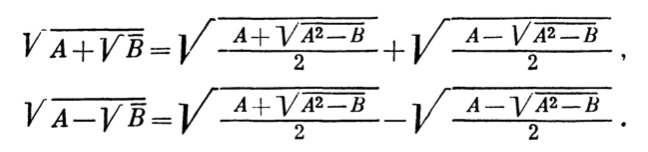

初学根式 (radical expression) 时, 经常遇到这样一类问题: 形如 \(\sqrt{A \pm \sqrt B}\) 的根式是否需要继续化简. 例如:
\(\sqrt{3 + 2\sqrt2}\) 可以化简为 \(\sqrt2 + 1\); \(\sqrt{2+\sqrt3}\) 可以化简为 \(\frac{\sqrt6 + \sqrt2}2\);
而
\(\sqrt{4 +\sqrt2}\) 似乎无法进一步化简.
这种根号里面还套着根号的式子其实在数学里面没有一个专门的术语名称, 本文中我们就把它叫做复合根式 (与之相对的, 没有根号嵌套的根式, 我们就称为简单根式).
在学生阶段做题的时候, 如果计算结果遇到这种复合根式, 通常是能进一步化简成不是复合形式的根式的. 但事实上, 如果我们能有更多的经验, 会发现「这种复合根式没法进一步化简」好像才是比较正常, 或者说, 比较常见、更容易发生的情况. 这个时候自然就有一个问题: 什么时候这种复合根式是可以继续化简的?
其实提到这个问题的时候, 我的内心还是有一点小骄傲的, 这也是我会写这篇文章的原因.
事情是这样的, 在很久很久以前我本人还是初中萌新的那个年代, 有一天数学老师在下课前最后不到一分钟的时间提到了这个问题, 并且以「掩耳不及迅雷之势」提点了一下答案, 但是由于这个过程实在太快, 几乎就没有同学注意到. 而作为极少数注意到这个知识点的同学, 我竟然还在接下来的课间 10 分钟内给出了完整的证明推导. 当时可把我牛 X 坏了, 我要先叉会儿腰去... :P
先说结论, 对于如下形式的符合根式
\[
\sqrt{A \pm \sqrt B}
\]
这里 \(A\) 和 \(B\) 都是正整数, 当且仅当 \(A^2 - B\) 是一个完全平方数时, 它可以化简成如下形式的简单根式
\[
\sqrt a \pm \sqrt b
\]
其中 \(a\) 和 \(b\) 要么是整数, 要么是分母为 \(2\) 的最简分数.
这个结论的证明其实也不难, 比方说我们就先考虑 \(\sqrt{A + \sqrt B}\); 稍微有计算经验的同学就应该能想到减号的情况 \(\sqrt{A - \sqrt B}\) 其实应该是类似的.
如果 \(A^2 - B\) 是一个完全平方数, 我们可以假设
\[
A^2 - B = n^2
\]
不难想到, 接下来的任务应该是设法把 \(A + \sqrt B\) 变形成一个完全平方式的样子; 并且主要变形技巧应该是利用上面刚刚设出的字母 \(n\) 来消掉原来的一个字母, 于是目前主要问题就是需要纠结一下到底消 \(A\) 还是消 \(B\).
如果你真的很纠结, 那我们就都试一试呗.
如果选择消 \(A\), 那就应该用到 \(A^2 = B + n^2 \Rightarrow A = \sqrt{B + n^2}\), 代入我们要研究的式子就有
\[
A + \sqrt B = \sqrt{B + n^2} + \sqrt B
\]
不出意外的话, 正常人看到这个式子应该是不会有任何想法的. 看上去此路不通, 那我们走另一条路看看: 要消 \(B\) 就应该用到 \(B = A^2 - n^2\), 于是
\[
A + \sqrt B = A + \sqrt{A^2 - n^2}
\]
这个式子乍看上去可能也会让人有点灰心, 但聪明如你应该至少能看出来可以用一次平方差公式,
\[
A + \sqrt{A^2 - n^2} = A + \sqrt{(A+n) (A-n)}
\]
然后接下来该怎么办就比较体现功底和毅力了. 你需要能想到以下两点, 并注意到它们之间的联系
- \(A+n\) 和 \(A-n\) 相加可以消去 \(n\) 得到只包含 \(A\) 的式子;
- 如果想让 \(A + \sqrt{(A+n) (A-n)}\) 套上完全平方公式的话, 其根式部分 \(\sqrt{(A+n) (A-n)}\) 似乎应可能是充当交叉项的角色.
然后在这两个点的指导下坚强的计算下去, 就能够成功的做出来.
\[
\begin{aligned}
A + \sqrt{(A+n) (A-n)}
&= \frac{(A+n) + (A-n)}2 + \sqrt{(A+n) (A-n)} \\
&= \frac{ \left( \sqrt{A+n} \right)^2 + \left( \sqrt{A-n} \right)^2 + 2 \cdot \sqrt{A+n} \cdot \sqrt{A-n}}2 \\
&= \frac{\left( \sqrt{A+n} + \sqrt{A-n} \right)^2}2
\end{aligned}
\]
这样就可以得到我们想要的结果
\[
\sqrt{A + \sqrt B} = \sqrt{\frac{\left( \sqrt{A+n} + \sqrt{A-n} \right)^2}2} = \sqrt{\frac{A+n}2} + \sqrt{\frac{A-n}2}
\]
类似的, 不难得到
\[
\sqrt{A - \sqrt B} = \sqrt{\frac{A+n}2} - \sqrt{\frac{A-n}2}
\]
至此, 我们的证明也基本上就完成了.
你还记得我们是想要证明什么吗?
不过, 问题到这里其实还可以有后续. 回去翻一下我们对待证结论的陈述方式
对于形如 \(\sqrt{A \pm \sqrt B}\) 的符合根式 (这里 \(A\) 和 \(B\) 都是正整数), 当且仅当 \(A^2 - B\) 是一个完全平方数时, 它可以化简成形如 \(\sqrt a \pm \sqrt b\) 的简单根式 (其中 \(a\) 和 \(b\) 要么是整数), 要么是分母为 \(2\) 的最简分数.
而目前我们得到的结论是
\[
\sqrt{A \pm \sqrt B} = \sqrt{\frac{A+n}2} \pm \sqrt{\frac{A-n}2}
\]
这里有 \(A^2 - B = n^2\). 我们至少还可以思考这么两个问题:
- 这个「公式」的左边是 \(A,B\) 两个字母, 但右边却「凭空」出现了一个 \(n\), 能不能把式子的形式写的更「合理」一点呢?
注意一下我们前面对待证结论最早的陈述方式, 措辞中用到了一个词: 「当且仅当」. 这里面其实还有一个反问题, 即
如果形如 \(\sqrt{A \pm \sqrt B}\) 的符合根式可以化简成形如 \(\sqrt a \pm \sqrt b\) 的简单根式, 那么 \(A^2 - B\) 是否一定是一个完全平方数?
各位读者同学, 这两个问题你们都有思路吗?